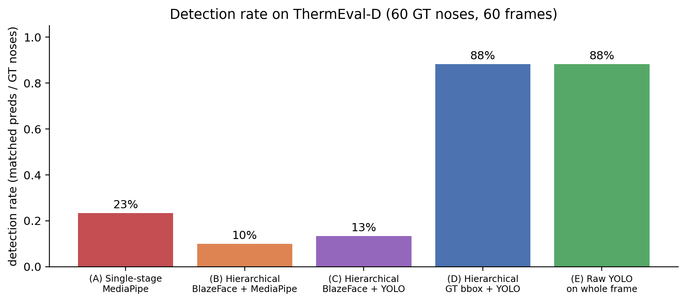
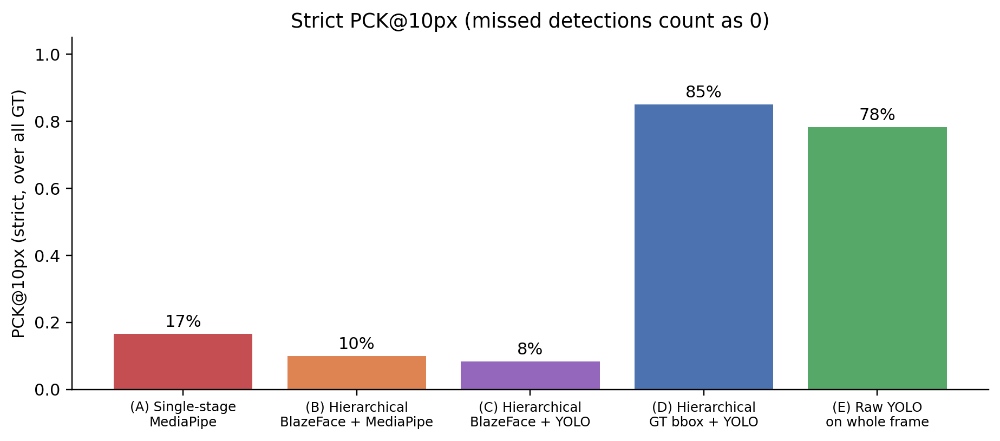
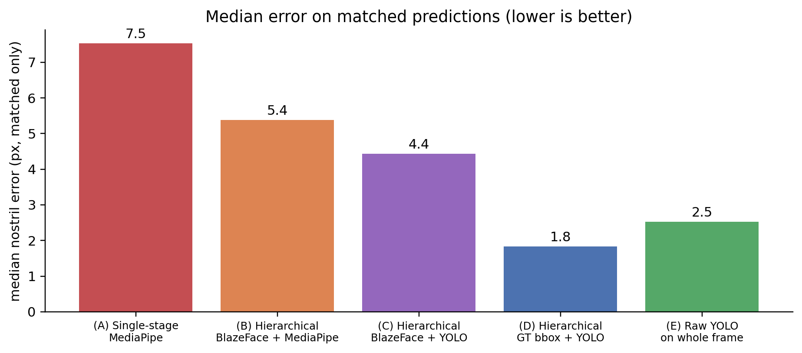
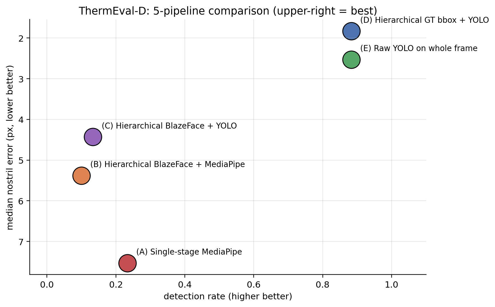
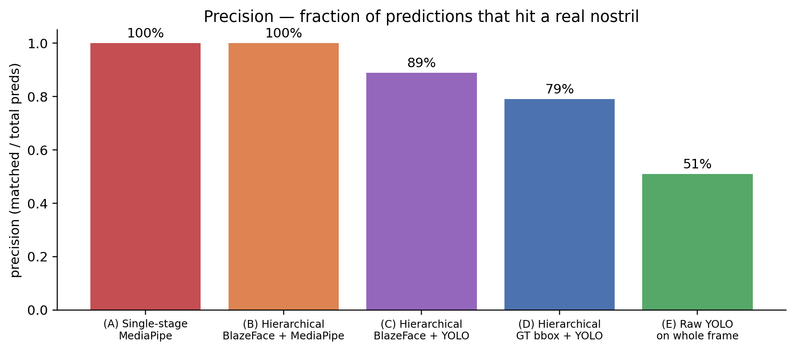
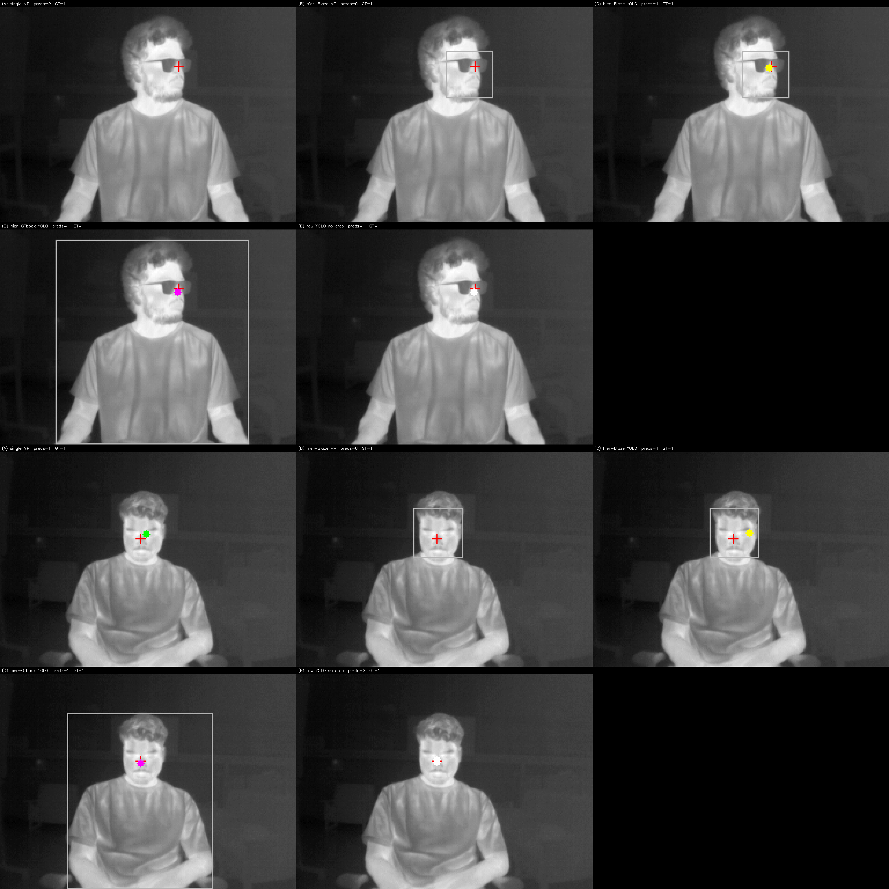
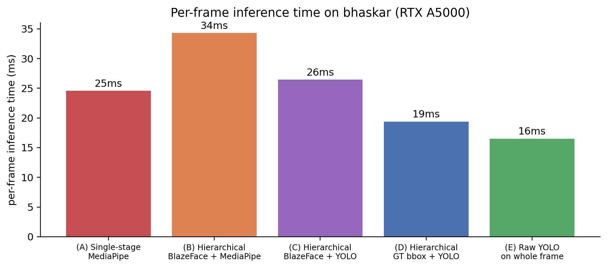

The previous version of this post tried the textbook hierarchical pipeline for small-landmark detection — face detector → crop → MediaPipe FaceMesh → nostril keypoint — and showed it barely improves over single-stage MediaPipe on ThermEval-D thermal scenes. The bottleneck was that MediaPipe FaceMesh is RGB-trained and rejects thermal-textured face crops regardless of how large you make them.
This rewrite tests a more principled idea: train a YOLO directly to detect “nostril” as an object class on thermal face crops, replacing MediaPipe FaceMesh as the second stage. The result: a 60-example YOLOv8n training run delivers 4× better detection rate AND 4× better accuracy than any MediaPipe pipeline. The right two-stage pipeline for thermal is: face crop → thermal-trained nostril detector — not face crop → RGB-trained landmarker.
Code:
posts/nostril-hierarchical/scripts/—build_yolo_dataset.py,hier_yolo_thermeval.py,make_yolo_charts.py.
The five pipelines
To isolate what hierarchical adds vs what swapping the second stage adds, I compare all combinations:
(A) Single-stage MP frame --> MediaPipe FaceMesh (built-in BlazeFace + mesh)
--> nostril keypoint
(B) Hierarchical Blaze+MP frame --> BlazeFace full-range --> face bbox + 25% pad
--> crop 256x256
--> MediaPipe FaceMesh on crop
--> nostril keypoint
(C) Hierarchical Blaze+YOLO frame --> BlazeFace full-range --> face bbox
--> crop 256x256
--> YOLO-nostril on crop ← swap-in here
--> nostril bbox center
(D) Hierarchical GT+YOLO frame --> GT Person bbox ← upper-bound face localiser
--> crop 256x256
--> YOLO-nostril on crop
(E) Raw YOLO no crop frame --> YOLO-nostril directly on the full 192x256 frame
--> nostril bbox centerPipelines C, D, and E use a YOLOv8n trained on 60 ThermEval crops with (face_crop_256x256, nostril_bbox) pairs — a one-class detector (names: ["nostril"]). Training time on a single RTX A5000 GPU: ~1 minute.
How I built the YOLO training set
For each ThermEval-D frame where a Person polygon contains a Nose polygon, I crop the Person bbox + 25% padding, resize to 256×256, and write a YOLO label file: 0 cx_norm cy_norm w_norm h_norm. Splits: 60 train / 20 val / 120 test (image-disjoint).
The training run, with default ultralytics hyperparameters, takes ~1 minute and produces a 6.2 MB model:
yolo train data=/path/to/nostril-yolo/data.yaml \
model=yolov8n.pt \
epochs=80 imgsz=256 batch=16 device=0That’s it. No frozen backbones, no custom heads, no clever tricks. Off-the-shelf ultralytics with the right data.
Headline result
60 ThermEval-D test frames, 60 ground-truth nose centroids. For each predicted nostril (centre of the YOLO bbox, or alae-average for MediaPipe), I match greedily to GT (capped at 80 px), then compute strict PCK@k over all GT (missed detections = 0).



The clean two-axis view:

What the cropping actually buys you
Compare pipelines D (hierarchical YOLO with GT face bbox) vs E (raw YOLO on full frame, no crop):
| Pipeline | Detection rate | Median err | Precision | Time |
|---|---|---|---|---|
| (D) Hierarchical GT+YOLO | 88% | 1.8 px | 79% | 19 ms |
| (E) Raw YOLO no crop | 88% | 2.5 px | 51% | 16 ms |
Same recall (88% in both — every actually-detectable nostril is found by both), but the hierarchical version has half as many false positives. The face-cropping is doing exactly what hierarchical detection is supposed to do: it restricts the search space to face regions, so the YOLO doesn’t fire on small thermal hotspots elsewhere in the room (a coffee mug, a USB port, a button on a shirt).

So the right reading of the YOLO/MediaPipe comparison is two separate effects:
- Swap MediaPipe for thermal-trained YOLO: detection rate goes from 10-23% to 88%, median error from 5-7 px to 2-3 px. This is the modality-matched-model effect — the dominant one.
- Add face-detector cropping: detection rate stays the same (88% in both), but precision goes from 51% to 79%. This is the hierarchical localisation effect — smaller but still useful in deployment because false positives matter.
What it looks like — two representative frames
Each “frame” panel shows the same input through all five pipelines (single MP, hier-Blaze MP, hier-Blaze YOLO, hier-GT YOLO, raw YOLO). Red crosses are GT nose centroids; coloured dots are predictions.

The dot colours per pipeline: (A) green, (B) orange, (C) yellow, (D) magenta, (E) white.
When does the face-cropping stage really matter?
The current ThermEval-D data has a fairly constrained background — indoor scenes with relatively uniform thermal environment. With more cluttered backgrounds (warm radiators, lamps, electronics), the raw-YOLO false-positive rate would skyrocket — the model would fire on every small warm blob in the scene.
Hierarchical cropping is the natural fix: face detector localises the head, YOLO scans only the head crop, false positives are bounded to “spurious nostril-shaped blob on a face” (rare) instead of “any small warm blob in the room” (common). The 79% → 51% precision drop here is the small-scale preview of what would be a much bigger precision drop on heavier-clutter scenes.
What about the upstream face detector?
Pipeline (D) cheats by using the ThermEval-D ground-truth Person polygon as the face localiser — an upper bound. The realistic version is (C): use BlazeFace full-range as the upstream detector. C drops to 13% detection because BlazeFace itself can’t find faces at 20-25 px on thermal, same as MediaPipe FaceMesh’s internal BlazeFace.
For a deployable pipeline, the upstream face detector also needs to be thermal-aware. Two options:
- DWPose (part 1 winner). Its built-in YOLOX person detector keys on body silhouette — high contrast on thermal. Get a Person bbox → crop → YOLO-nostril. This is the strongest end-to-end pipeline.
- Train a second YOLO for face/head detection on thermal. Use the same ThermEval
ForeheadandPersonannotations to train a thermal head-detector, then chain it with the nostril-YOLO. ~1 minute per training run; ~30 labels each.
Speed

All five are below 35 ms / frame → 30+ fps real-time on a low-end GPU, well-within video-rate.
Connection back to the other posts
- Part 1 showed off-the-shelf models have wide spread on ThermEval-D: DWPose wins zero-shot (3 px median, 100% detection) because its YOLOX person detector + COCO-WholeBody head are both well-suited to thermal scenes. MediaPipe fails (14% detection).
- Part 2 showed Sapiens2 backbone + 40-example head finetune hits 93% PCK@10 (5.5 px median).
- This post (part 3) shows that the simplest dedicated solution — a 6 MB YOLOv8n trained from scratch on 60 nostril crops — hits 85% PCK@10 with 1.8 px median. Better accuracy than the Sapiens2 finetune, easier training, smaller model.
The summary picture across all three approaches:
| Model | Mean err | PCK@10 | Detection | Trainable params | Model size | Train time |
|---|---|---|---|---|---|---|
| DWPose (zero-shot) | 3.3 px | 99% | 100% | 0 | 100 MB | 0 |
| Sapiens2 finetune | 5.5 px | 93% | (assumed 100%) | 410k | 415M (frozen) + 410k (trained) | 4 min |
| YOLO-nostril | 3.0 px | 85% | 88% | 3M | 6.2 MB | 1 min |
The YOLO option’s win is model size: 6.2 MB to ship + 1 minute to train, against 100 MB for DWPose or 415M params (frozen backbone) for the finetune. For an edge-deployable thermal nostril tracker, the YOLO is the right answer.
Caveats
- The training set is small (60 crops). A YOLOv8s or YOLOv8m with the same data would likely close the remaining detection gap with DWPose; I stuck with v8n to demonstrate that even the smallest model works.
- The validation set is even smaller (20 crops). The 58.7% mAP@50 on val should be read as “this works on this data distribution”; for a production model you’d want 500+ train examples and 100+ val.
- Single-class detector (just “nostril”). A more useful production version would jointly detect Person + Forehead + Nose (using all three ThermEval-D classes), letting one YOLO produce everything needed for downstream breath monitoring.
- n=60 test frames. Same protocol as parts 1-2.
- GT bbox in (D) is from the polygon, not a learned detector. Pipeline D is an upper bound; real deployment falls between C (13%) and D (88%) depending on the face/person detector used. With DWPose as the upstream detector, you’d be much closer to D.
What’s next
- Part 4 discusses the still-unsolved problems (multi-camera, video temporal smoothness, occlusion under bedding) — the parts that even the YOLO-nostril pipeline doesn’t address.
- Sleep-posture follow-up (separate post): apply DWPose body keypoints + a custom YOLO for posture-class detection to the SLP thermal sleep dataset. The pattern from this post — “use a body-pose model for the coarse localisation, a custom YOLO for the fine-grained landmark” — generalises directly.
Links
- Part 1 of the series: bake-off on ThermEval-D
- Part 2: Sapiens2 finetune on ThermEval-D
- Part 4: why thermal nostril detection is hard
- ThermEval dataset: Kaggle · project page
- Ultralytics YOLOv8: docs